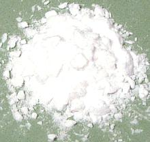
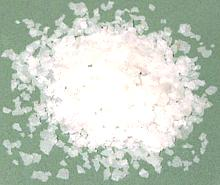
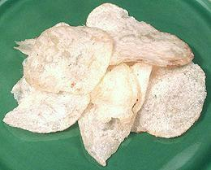
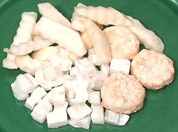
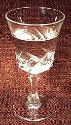

SAFARI
Users
Potato Starch
 Potato starch is a superior thickener that should be used in place of cornstarch (UK cornflour) for most applications. You can use only 2/3 as much for the same thickening power and the flavor is more neutral letting the flavor of other ingredients shine through.
Potato starch has no gluten and is safe for celiacs and persons with wheat allergies. It can be used as a coating for fried products with better browning properties than rice flour.
Don't Do: Many Chinese recipes (and some Western recipes) coat meat, fish, fowl or other foods with cornstarch before frying. The cornstarch keeps the food from sticking to the pan - but also thickens the sauce when the items are simmered with liquids after frying. Coating with the more powerful potato starch will then require a lot more liquid resulting in a larger amount of less flavorful sauce than you probably want.
Potato starch is becoming easier to find. Practically every ethnic market
has it, usually packaged in plastic bags, but it may still be hard to find
in supermarkets.
Instant Mashed Potatoes
 These come in two forms, flakes and granules or pearls. The granular variety is sold mostly for institutional and restaurant use and provides a superior result. Flakes are sold in the supermarkets for home use and are quicker. Nutrition is similar to fresh mashed potatoes except for almost total loss of Vitamin C.
In addition to the obvious use, faking up mashed potatoes, these products are used as a thickening ingredient in some recipes.
Dehydrated potato flakes are also a big item for survivalists awaiting
nuclear winter and for Mormons uncomfortable with the idea of depending
on seagulls.
Potato Chips
 Aside from being an extremely fattening snack, potato chips are sometimes crumbled and used as a coating for fish or fowl and sometimes meat. The objective is to have a fried flavor to the crust even though the coated items are actually baked in the oven.
The photo specimens were from Frito-Lay, a company that has participated
in developing a number of potato cultivars specific to their processing
needs. Potatoes, Sunflower Oil and/or Corn Oil, Salt. The color is uniformly
very light, probably to minimize formation of acrylamide.
Frozen Potato Products
 Frozen French fries, baked potatoes, potato rounds, cut wedges, dice, hash brown patties and many other shapes. These are most used in institutional service and fast food restaurants but some shapes also appear in supermarkets for home cooks pressed for preparation time.
Whole baked potatoes and chunks of baked potatoes as well as frozen
mashed potatoes are all available to the restaurant and frozen dinner
trades.
Vodka
 By no means is all vodka made from potatoes, but a fair amount is, particularly in Poland where potato vodka was invented around 1800.
Links
- P1 Potato Products - United States Potato Board.